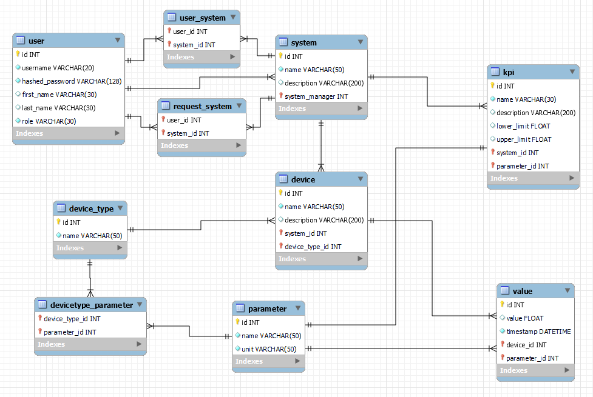

IoT: správa zařízení
- Autoři
- Ondřej Bahounek
xbahou00@stud.fit.vutbr.cz -
- Implementace a finalizace databáze
- Implementace logiky serveru
- Libor Štěpánek
xstepa73@stud.fit.vutbr.cz -
- Prvotní návrh struktury databáze
- Návrh a stylování rozhraní (bootstrap)
- Uživatelský vstup pomocí wtforms, vč. validace
- Testování a opravy chyb
- Filip Vosáhlo
xvosah02@stud.fit.vutbr.cz -
- Správa typů zařízení a parametrů
- Testování a opravy chyb
- URL aplikace
- https://iis-project.onrender.com
Uživatelé systému pro testování
| Login | Heslo | Role |
|---|
| admin | admin_heslo | Administrátor |
| broker | broker_heslo | Broker |
| reg_user | reg_user_heslo | Registrovaný uživatel |
Video
Přiložte odkaz na komentované video demostrující použití informačního systému. Zaměřte se na případy užití definované zadáním (např. registrace uživatele, správa uživatelů a činnosti jednotlivých rolí). Video nahrajte například na VUT Google Drive, kde ho bude možné přímo spustit z odkazu.
Implementace
aplikace se nacházi ve složce app
models.py - obsahuje modely databáze a funkce na queries
auth/routes.py - controller, implementuje témeř všechnu funkcionalitu aplikace
auth/graph.py - generuje grafy vývoje hodnot v matplotlib
forms.py - obsahuje formuláře pro zadáváni hodnot - psáno pomocí wtforms
Databáze

Instalace
Instalace na server:
- ./setup.sh - nainstaluje všechny potřebné balíčky a závislosti, očekává se verze pythonu 3.7, vyšší verze budou taky fungovat
- source venv/bin/activate - aktivuje python vývojové prostředí
- python init_db.py - inicializuje databázi na linku definovanem v "app/config.py"
- gunicorn run:app - spustí aplikaci
Lokální instalace:
- ./setup.sh - nainstaluje všechny potřebné balíčky a závislosti, očekává se verze pythonu 3.7, vyšší verze budou taky fungovat
- source venv/bin/activate - aktivuje python vývojové prostředí
- "python init_db.py"
- Ve výchozím nastavení aplikace očekává databázi na externím serveru. Pro použití lokální databáze v "app/config.py" zakomentujte řádek s connection stringem a odkomentujte řádek pod ním (dle komentářů vně) abyste místo vytváření PostgreSQL databáze na serveru vytvořili a připojovali se k lokální SQLite databázi
- ./run.sh - spustí aplikaci
Známé problémy
Žádné známé problémy